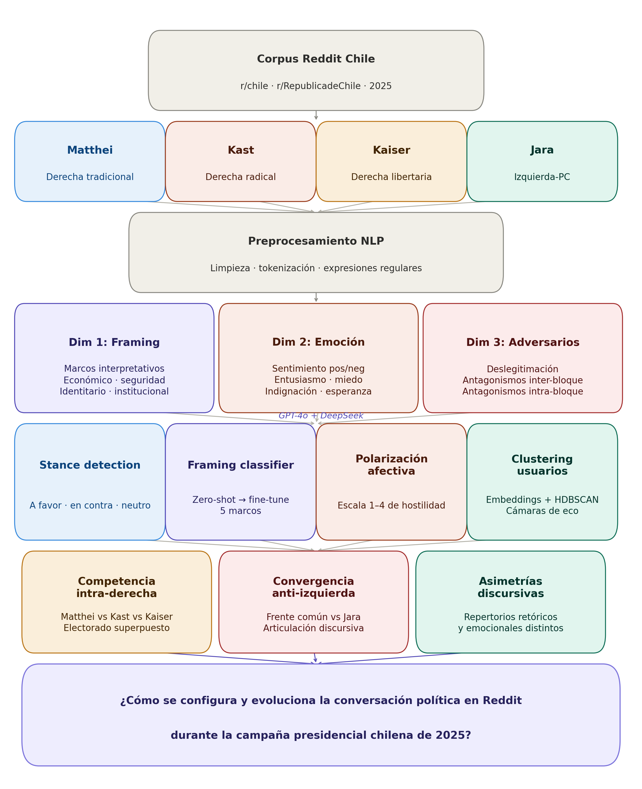

2 Presentación del Problema
Anotación LLM dual y polarización discursiva en Reddit durante las elecciones chilenas de 2025
2.1 El problema: competencia política digital en un sistema fragmentado
El sistema de partidos chileno atraviesa una crisis de representación sin precedentes desde el retorno a la democracia. Los indicadores son contundentes: la identificación partidaria ha caído sostenidamente desde 2010, la volatilidad electoral alcanzó máximos históricos en los ciclos 2021-2023, y la fragmentación parlamentaria dificulta la formación de coaliciones estables (PNUD, 2024; Luna, 2023). En este contexto de desalineamiento, las plataformas digitales han emergido como espacios donde se disputa la reconfiguración de las identidades políticas (González 2024) —particularmente en el campo de las derechas, donde coexisten proyectos en competencia que aún no han estabilizado sus fronteras.
El problema central que aborda esta investigación puede formularse así:
En un contexto de fragmentación partidaria y reconfiguración ideológica, ¿cómo se estructura la competencia política digital entre actores que comparten un espacio ideológico pero compiten por diferenciarse? ¿Qué estrategias discursivas despliegan? ¿Bajo qué condiciones convergen o divergen?
Este problema es relevante por tres razones:
Vacío empírico: Mientras abundan los estudios sobre polarización izquierda-derecha, la competencia intra-bloque —particularmente entre derechas— permanece subexplorada en América Latina.
Transformación en curso: Las derechas chilenas están en proceso de reconfiguración activa; estudiar este proceso mientras ocurre permite capturar dinámicas que análisis retrospectivos pierden.
Implicancias democráticas: Comprender cómo se construyen adversarios y fronteras identitarias en espacios digitales resulta crucial para evaluar la calidad del debate público y anticipar escenarios de polarización (Kingzette et al. 2021).
2.2 Acercamiento: actores, dimensiones y niveles de análisis
Los actores: tres derechas y un adversario
La investigación se focaliza en cuatro candidaturas que representan posiciones distintivas en el espectro político chileno:
| Actor | Posición | Base social |
|---|---|---|
| Evelyn Matthei | Derecha tradicional | Élites empresariales, sectores medios-altos |
| José Antonio Kast | Derecha radical-conservadora | Transversal en términos de clase, presencia extensiva en regiones del país, conservadores religiosos |
| Johannes Kaiser | Derecha libertaria | Jóvenes masculinos, usuarios intensivos de internet |
| Jeannette Jara | Izquierda-PC | Militancia de izquierda, sectores medios y populares |
Como se observa en la Tabla 2.1, el diseño compara tres derechas y un adversario común de izquierda.
Esta selección permite observar:
- Competencia intra-derecha: Cómo tres proyectos distintos disputan un electorado parcialmente superpuesto.
- Convergencia anti-izquierda: Cómo actores previamente enfrentados articulan un frente común frente al adversario ideológico.
- Asimetrías discursivas: Cómo diferentes corrientes movilizan repertorios retóricos y emocionales distintivos.
Las dimensiones analíticas
El análisis se estructura en torno a tres dimensiones que capturan aspectos complementarios de la comunicación política:
Dimensión 1: Encuadre (framing) - ¿Qué marcos interpretativos predominan en el discurso de cada corriente? - ¿Cómo definen el problema, sus causas y sus soluciones? - ¿Qué está “en juego” según cada actor?
Dimensión 2: Emoción - ¿Qué emociones movilizan las distintas candidaturas? - ¿Cuál es la proporción entre emociones positivas (entusiasmo, esperanza) y negativas (miedo, indignación)? - ¿Hacia quién se dirigen las emociones negativas?
Dimensión 3: Construcción de adversarios - ¿Quiénes son construidos como amenazas o enemigos? - ¿Qué estrategias de deslegitimación se emplean? - ¿Cómo se articulan los antagonismos inter-bloque (derecha vs. izquierda) con los intra-bloque (entre derechas)?
2.3 Descripción de la propuesta analítica
Enfoque general
La propuesta combina ciencia social computacional con análisis interpretativo del discurso político (Keuschnigg, Lovsjö, y Hedström 2018). Esta combinación responde a una convicción metodológica: las técnicas computacionales permiten identificar patrones a escala que el análisis cualitativo tradicional no alcanza, pero requieren interpretación teóricamente informada para producir conocimiento sustantivo sobre procesos políticos (Hofman et al. 2021).
El flujo analítico puede representarse así:

La Figura 2.1 sintetiza el encadenamiento entre corpus, procesamiento, modelamiento y hallazgos.
Arquitectura del análisis
Fase 1: Caracterización del corpus - Estadísticas descriptivas: volumen, distribución temporal, participación por subreddit - Mapeo de actores: frecuencia de mención de cada candidatura - Identificación de eventos: picos de actividad y su correlación con acontecimientos políticos
Fase 2: Análisis de encuadres - Modelado de tópicos para identificar temas estructurantes - Análisis de co-ocurrencias: qué conceptos aparecen asociados a cada candidatura - Comparación inter-temporal: evolución de marcos entre primera y segunda vuelta
Fase 3: Análisis emocional - Clasificación de sentimiento (positivo/negativo/neutro) - Identificación de emociones discretas cuando es posible - Construcción de “perfiles emocionales” por candidatura
Fase 4: Análisis de adversarios - Identificación de menciones cruzadas entre candidaturas - Clasificación de valencia: menciones positivas, negativas, neutras - Mapeo de redes de antagonismo
Fase 5: Síntesis e integración - Triangulación de hallazgos entre dimensiones - Construcción de narrativa analítica - Identificación de mecanismos explicativos
Originalidad de la propuesta
La propuesta se distingue de estudios previos en tres aspectos:
Foco en competencia intra-bloque: Mientras la mayoría de estudios examina la polarización entre izquierda y derecha, esta investigación centra la atención en las dinámicas dentro del campo de las derechas.
Perspectiva procesual: En lugar de fotografías estáticas, el diseño longitudinal permite observar cómo evolucionan las estrategias discursivas a lo largo del ciclo electoral.
Reddit como campo: La plataforma está subexplorada en el contexto latinoamericano, y sus características estructurales (conversaciones anidadas, votación comunitaria) ofrecen posibilidades analíticas distintivas.
2.4 Producto mínimo viable (MVP) y objetivos operacionales
Definición del MVP
El producto mínimo viable de esta investigación consiste en:
Un análisis sistemático de la conversación política en Reddit sobre las candidaturas presidenciales chilenas de 2025, que identifique y caracterice los patrones de encuadre, emoción y construcción de adversarios de cada corriente ideológica, y que documente su evolución a lo largo del ciclo electoral (agosto-diciembre 2025).
Objetivos operacionales y entregables
| Objetivo | Entregable | Indicador de cumplimiento |
|---|---|---|
| O1: Construir corpus | Base de datos estructurada | ≥1000 posts y ≥10.000 comentarios con menciones políticas |
| O2: Mapear emociones | Perfiles emocionales por candidatura | Clasificación de polarización y emociones |
| O4: Analizar adversarios | Red de antagonismos | Matriz de menciones cruzadas con valencia |
| O5: Documentar evolución | Serie temporal | Análisis por fase electoral (pre-campaña, campaña, segunda vuelta) |
| O6: Sintetizar hallazgos | Capítulos de resultados | Respuesta fundamentada a cada pregunta de investigación |
La planificación operativa del estudio se detalla en la Tabla 2.2.
Alcances y limitaciones anticipadas
Alcances: - El análisis cubre el debate en dos comunidades de Reddit, que constituyen los principales espacios de discusión política chilena en la plataforma. - El período captura fases clave del ciclo electoral, permitiendo observar dinámicas de cambio. - Las técnicas empleadas permiten procesar el corpus completo, no solo muestras.
Limitaciones: - Reddit no es representativo del electorado chileno; los hallazgos refieren al debate en esta plataforma específica, no a la opinión pública general. - Los usuarios de Reddit tienden a ser más jóvenes, más masculinos y más politizados que la población general. - El análisis de sentimiento automatizado tiene márgenes de error, particularmente con ironía, sarcasmo y jerga local. - La atribución ideológica de usuarios es inferida a partir de su comportamiento discursivo, no de autodeclaraciones.
2.5 Estrategia de validación
Validación interna
Triangulación metodológica: Los hallazgos de cada técnica son contrastados entre sí. Un patrón se considera robusto cuando emerge consistentemente de múltiples aproximaciones.
Verificación cualitativa: Los patrones identificados computacionalmente son verificados mediante lectura de casos. Cuando el análisis automatizado clasifica un comentario como “negativo hacia Matthei”, se revisan ejemplos para confirmar que la clasificación captura el fenómeno de interés.
Sensibilidad paramétrica: Las técnicas con parámetros ajustables son ejecutadas con múltiples configuraciones para verificar que los hallazgos no dependan de decisiones arbitrarias.
Validación externa
Triangulación con fuentes externas: Los patrones temporales identificados en Reddit son contrastados con el calendario de eventos políticos documentado en medios de comunicación. La correlación entre picos de actividad y eventos específicos (debates, declaraciones, encuestas) proporciona validación externa.
Consistencia con literatura: Los hallazgos son discutidos a la luz de estudios previos sobre comunicación política digital, derechas latinoamericanas y polarización. La convergencia con patrones documentados en otros contextos refuerza la validez; las divergencias son examinadas como posibles especificidades del caso chileno.
Criterios de éxito
La investigación se considerará exitosa si:
Responde las preguntas: Cada pregunta de investigación recibe una respuesta fundamentada empíricamente.
Identifica patrones no triviales: Los hallazgos van más allá de lo que podría inferirse sin análisis sistemático.
Documenta variación: El análisis captura diferencias significativas entre corrientes ideológicas, entre subreddits y entre fases electorales.
Genera interpretaciones plausibles: Los patrones identificados son interpretados mediante mecanismos teóricamente informados.
Reconoce limitaciones: El análisis explicita qué puede y qué no puede concluirse a partir de los datos disponibles.